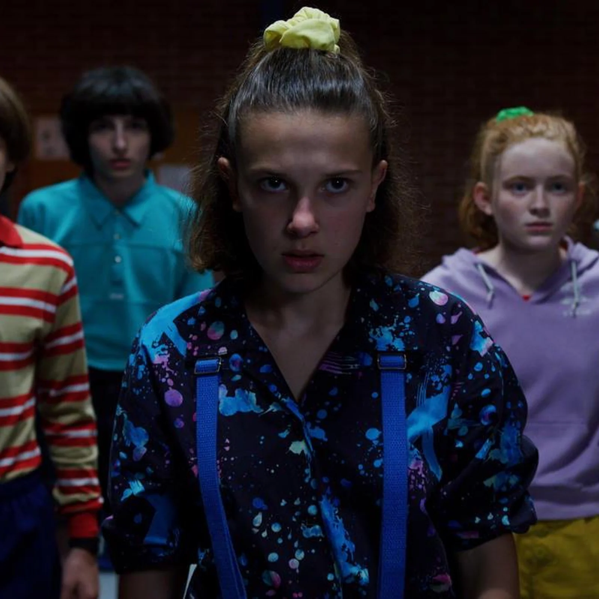
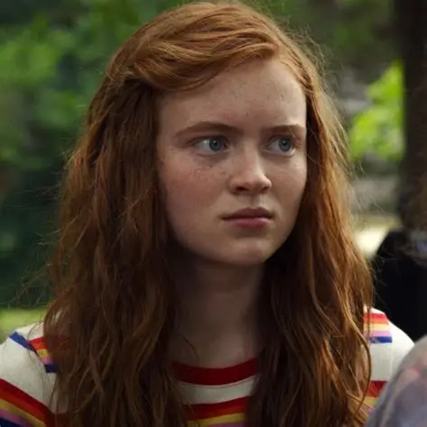

A terceira temporada de Stranger Things se passa no verão de 1985, quando Eleven e seus amigos estão aproveitando as férias, os namoros e o novo shopping de Hawkins. Mas a diversão acaba quando coisas estranhas começam a acontecer na cidade e o Devorador de Mentes volta ainda mais perigoso. Enquanto os amigos tentam descobrir o que está acontecendo, eles acabam enfrentando novos monstros, descobrindo segredos e vivendo aventuras cheias de ação e suspense. A terceira temporada é uma das mais emocionantes da série, misturando momentos engraçados, amizades, romances e cenas de tirar o fôlego. Com muitas surpresas e um final marcante, ela mostra que a amizade e a união são essenciais para enfrentar até os maiores perigos.

Na terceira temporada de Stranger Things, Eleven começa a viver uma fase diferente da sua vida. Ela está namorando Mike, faz uma grande amizade com Max e começa a descobrir quem realmente é, além dos seus poderes. Mas, quando uma nova ameaça aparece em Hawkins, Eleven precisa usar toda a sua força para proteger seus amigos. Durante a temporada, ela enfrenta o perigoso Devorador de Mentes e passa por momentos difíceis que colocam seus poderes à prova. Essa temporada mostra um lado mais humano de Eleven, com seus sentimentos, suas descobertas e sua vontade de ter uma vida normal. Ela se destaca pela coragem, pela força e pelo amor que sente pelos amigos, protagonizando algumas das cenas mais emocionantes e inesquecíveis da série.

Na terceira temporada de *Stranger Things*, Max Mayfield continua sendo uma personagem importante do grupo de amigos. Ela se aproxima ainda mais de Eleven, ajudando-a a descobrir novas experiências e a lidar com seus sentimentos. Ao mesmo tempo, Max participa da investigação dos acontecimentos estranhos que começam a ocorrer em Hawkins durante o verão. Com coragem e determinação, ela enfrenta situações perigosas ao lado dos amigos e ajuda o grupo a descobrir o que está por trás dos novos acontecimentos sobrenaturais.